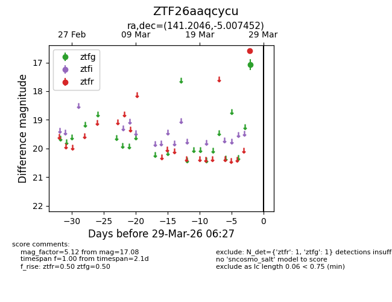
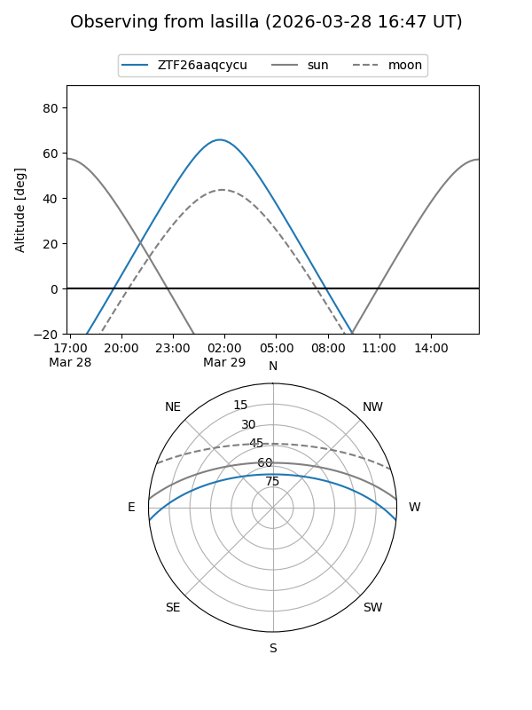
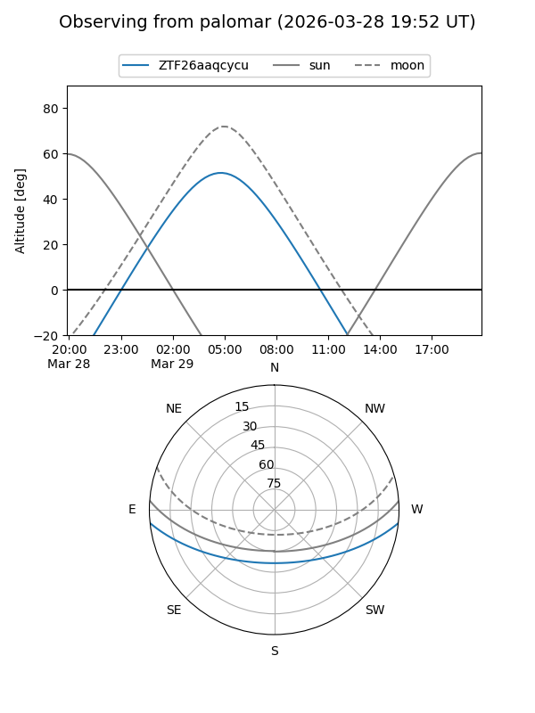

ZTF26aaqcycu
Target ZTF26aaqcycu at 2026-03-29 06:30
Aliases and brokers:
FINK: link
Lasair: link
ALeRCE: link
alt names
ZTF26aaqcycu (ztf,fink_ztf)
Coordinates:
equatorial (ra, dec) = 141.2046,-5.00745
equatorial (HMS+DMS) = 09:24:49.11,-05:00:26.83
galactic (l, b) = (237.6403,+30.67969)
Flags:
Photometry:
last ztfg=17.08, ztfr=16.60
1 ztfg, 1 ztfr detections
Lightcurve

Visibility


Additional plots